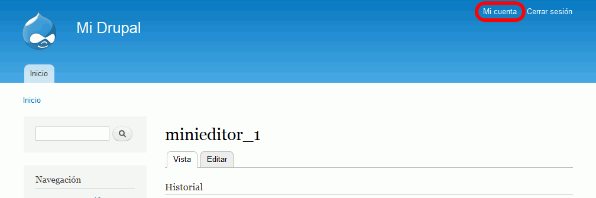

Estas soluciones están pendientes de actualizar para Drupal 8.
En esta lección se proponen soluciones detalladas de los ejercicios (2) de Drupal. Se recomienda intentar realizarlos primero sin recurrir a estas soluciones.
Drupal (2) 1 - Artículos y páginas básicas
La creación de artículos y páginas básicas no plantea ninguna dificultad, por lo que no se hace aquí ningún comentario adicional.
Drupal (2) 2 - Modificar la configuración de creación de artículos y páginas básicas
Aumentar el tamaño de las imágenes que se pueden subir a los artículos.
Como usuario admin y abrir el menú Usuarios > Permisos. En esa pantalla se pueden ver los permisos asignados a los roles existentes. Inicialmente, Drupal crea tres roles básicos: Usuario anónimo, Usuario autenticado y Administrador.
Para crear un nuevo Rol, hay que hacer clic en Roles, escribir el nombre del nuevo rol y hacer clic en Añadir rol:
Inmediatamente, se mostrará el nuevo rol en la lista de roles:
Haciendo clic en "editar permisos" se pueden asignar los permisos al rol (algunos permisos pueden representar riesgos de seguridad, se comenta en cada opción):
En el caso del rol minieditor, le podemos poner:
bloque Comment: todos los permisos menos Administrar comentarios
bloque Filter: permitir Filtered HTML y Full HTML
bloque Node: todos los permisos relacionados con la creación, edición y borrado del contenido propio
bloque Search: permitir Usar búsqueda y Usar búsqueda avanzada
bloque Taxonomy: ninguno
De la misma forma, crear el rol editor:
bloque Comment: todos los permisos
bloque Filter: permitir Filtered HTML y Full HTML
bloque Node: todos los permisos relacionados con la creación, edición y borrado del contenido propio y de otros (pero no marcar Sortear el control de acceso, Administrar tipos de contenido, Administrar contenido)
bloque Search: permitir Usar búsqueda y Usar búsqueda avanzada
bloque Taxonomy: todos
Crear los usuarios minieditor_1 y editor_1
Como usuario admin, abrir el menú Personas > Lista y hacer clic en Agregar usuario.
Se abrirá un formulario con la información del nuevo usuario:
En el caso del usuario minieditor_1, le podemos poner:
Nombre de usuario: minieditor_1
Dirección de correo electrónico: minieditor_1@example.com
Contraseña: minieditor_1
Roles: minieditor
Si no hay errores, Drupal indicará que se ha creado el usuario:
De la misma forma, crear el usuario editor_1 con rol editor.
Modificar la información de usuario
Los usuarios pueden modificar su información de usuario, por ejemplo, para incluir una imagen de usuario.
Entrar en Drupal como usuario minieditor_1 y hacer clic en Mi cuenta. Se mostrará la ficha del usuario:

Al hacer clic en Editar se pueden modificar los datos, por ejemplo, incluir una imagen de usuario:
Una vez subida la imagen, esta se muestra en la ficha del usuario ...
Drupal (2) 4 - Ajustar el editor CKEditor al rol
En Drupal 7, los perfiles de CKEditor van asociados a formatos de entrada, por lo que si se desea que un usuario vea un menú de CKEditor distinto del del administrador, se deberá:
Crear un nuevo Formato de texto (que se llamará, por ejemplo, HTML_para_minieditor)
Crear un nuevo perfil de CKEditor asociado al formato de texto creado (que se llamará, por ejemplo, CKEditor_para_minieditor)
Desactivar los formatos de texto Full HTML y Filtered HTML para el rol minieditor (y para el usuario autenticado)
Creación del formato de texto
Como usuario administrador, elija el menú Configuración > Formatos de texto
Haga clic en "Añadir formato de texto"
Rellene el formulario de creación del Formato de texto:
Nombre: HTML_para_minieditor
Roles: Marcar la casilla de minieditor
Al hacer clic en "Guardar la configuración", si no ha habido ningún problema se mostrará un mensaje confirmando la creación del Formato:
En la página Configuración > Formatos de texto se mostrará el nuevo Formato de texto:
Creación del perfil de CKEditor
Como administrador, elija el menú Configuración > CKEditor
Haga clic en "Create a new profile":
Rellene el formulario de creación del Perfil:
Basic Setup:
Nombre: CKEditor_para_minieditor
Formatos de texto: Marcar la casilla de HTML_para_minieditor
Editor appearance:
Barra de herramientas: Básico
Al hacer clic en "Guardar", si no ha habido ningún problema se mostrará un mensaje confirmando la creación del Perfil:
En la página Configuración > CKEditor se mostrará el nuevo Perfil:
Desactivación de los Formatos Full HTML y Filtered HTML para rol minieditor
En Configuración > Formatos de texto se puede ver que los Formatos Full HTML y Filtered HTML están activados para el rol minieditor:
Haciendo clic en el enlace "configurar" correspondiente, se puede editar el Formato de texto Full HTML y desmarcar la casilla minieditor:
Haciendo clic en el enlace "configurar" correspondiente, se puede editar el Formato de texto Filtered HTML y desmarcar las casillas minieditor y usuario autenticado:
Una vez guardada la configuración, se puede comprobar que el rol minieditor ya no tiene acceso a los Formatos de texto Full HTML y Filtered HTML:
La desactivación de los Formatos de texto se podría haber realizado en Usuarios > Permisos:
Comprobación
Como usuario minieditor_1, al crear nuevo contenido, compruebe que se puede elegir el formato de texto HTML_para_minieditor y que la barra de herramientas de CKEditor es la barra básica:
Además, no se deben poder elegir los formatos de texto Full HTML ni Filtered HTML:
Drupal (2) 5 - Subir imágenes y archivos: módulo IMCE
En este ejercicio se instalará un módulo para subir archivos, concretamente, el módulo IMCE.
Descargar el módulo IMCE para Drupal 7 y descomprimir el archivo comprimido en la carpeta /drupal/sites/all/modules/imce.
Entrar en Drupal como usuario admin y abrir el menú Módulos, que automáticamente mostrará el nuevo módulo en el apartado Multimedia:
Activar el módulo y hacer clic en Guardar configuración.
Configurar CKEditor para que utilice IMCE al enlazar a ficheros o imágenes en el perfil "Full HTML":
Abrir el menú Configuración > Autoría del contenido > CKEditor y hacer clic en editar el perfil Full:
Modificar las opciones File Browser Settings de manera que CKEditor utilice IMCE:
Configurar IMCE para que usuarios con un determinado rol puedan utilizar IMCE:
Abrir el menú Configuración > Medios > IMCE y asignar el perfil User-1 al rol administrador:
Comprobar creando un artículo (con el formato de texto Full HTML) que al insertar una imagen el cuadro de diálogo incluye el botón "Ver Servidor":
Drupal (2) 6 - Configurar IMCE para el rol de minieditor
En este ejercicio se configurará IMCE para que dos usuarios mineditor_1 y mineditor_2 (de rol minieditor) también pueda subir archivos e imágenes con IMCE, creando en IMCE un perfil minieditor. Hacerlo primero de manera que cada uno pueda subir archivos en su propia carpeta. Modificarlo después de manera que compartan la misma carpeta.
Por escribir
Drupal (2) 7 - Ampliar las capacidades de IMCE con el módulo IMCE Mkdir
En este ejercicio se ampliarán las capacidades de IMCE con el módulo IMCE Mkdir, de manera que los usuarios puedan crease subcarpetas en la carpeta donde suben sus archivos.